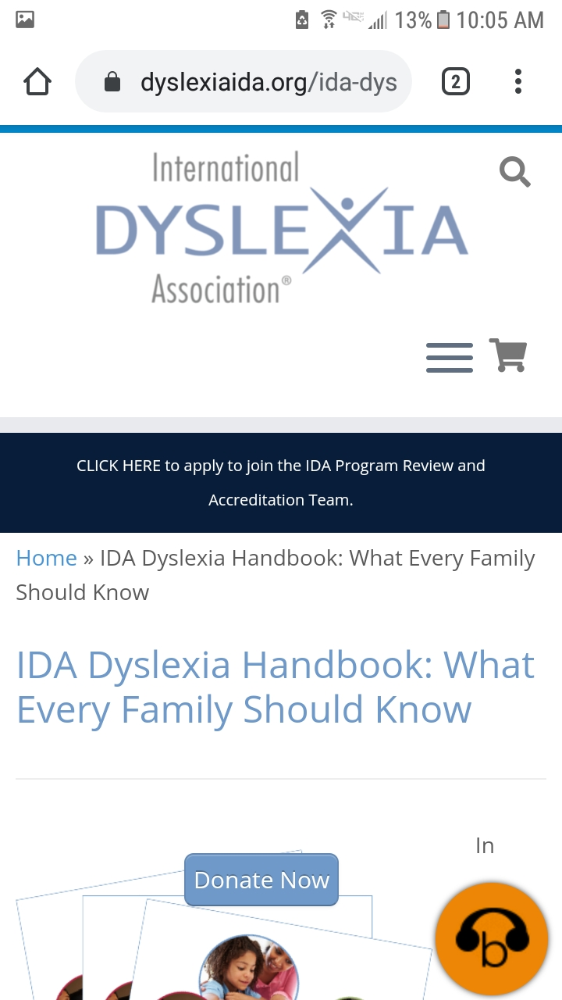
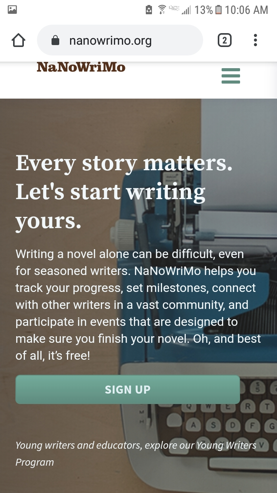

PARC: Alignment
Metro Screenworks
The Metro Screenwork’s homepage shows alignment because everything is nicely spaced from each other.
Fitt's Law
International dyslexia association

The International dyslexia association page shows Fitt’s law because the round orange button that will read the page to you stands out and is always in the bottom right corner.
Visual Hierarchy
NaNoWriMo

The NaNoWriMo homepage shows visual hierarchy because your eyes are drawn to the first two sentences. They are bigger and bolder than the other sentences on the homepage.